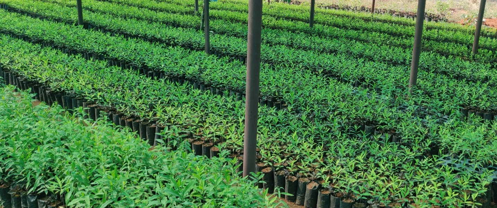

SRINIVASA NURSERY
Srinivasa Reddy:- 9876543210

Nursery
HOME
ABOUT US
PRODUCTS
CONTACT US
ABOUT US
A nursery is a place where plants are propagated and grown to a desired age.
They include retail nurseries which sell to the general public, wholesale nurseries which sell
only to businesses such as other nurseries and to commercial gardeners, and private nurseries which supply
the needs of institutions or private estates.
Nurseries may supply plants for gardens, agriculture, forestry and conservation biology.
Some of them specialize in one phase of the process: propagation, growing out, or retail sale; or in one type of plant:
e.g., groundcovers, shade plants, or rock garden plants. Some produce bulk stock, whether seedlings or grafted, of particular
varieties for purposes such as fruit trees for orchards, or timber trees for forestry. Some produce stock seasonally, ready in
springtime for export to colder regions where propagation could not have been started so early, or to regions where seasonal pests
prevent profitable growing early in the season.
Nurseries grow plants in open fields, on container fields, in tunnels or greenhouses. In open fields, nurseries grow decorative trees,
shrubs and herbaceous perennials. On a containerfield nurseries grow small trees, shrubs and herbaceous plants, usually destined for
sales in garden centers. These have proper ventilation, sunlight etc. Plants may be grown by seeds. The most common method is by cutting
plants/plant cuttings. These can be taken from shoot tips or from roots etc. By these methods plants are grown in nurseries and gardens
Conditioning
With the objective of fitting planting stock more able to withstand stresses after outplanting, various nursery treatments have been
attempted or developed and applied to nursery stock. Buse and Day (1989),[1] for instance, studied the effect of conditioning of
white spruce and black spruce transplants on their morphology, physiology, and subsequent performance after outplanting. Root pruning,
wrenching, and fertilization with potassium at 375 kg/ha were the treatments applied. Root pruning and wrenching modified stock
in the nursery by decreasing height, root collar diameter, shoot:root ratio, and bud size, but did not improve survival
or growth after planting. Fertilization reduced root growth in black spruce but not of white spruce.
Hardening off, frost hardiness
Seedlings vary in their susceptibility to injury from frost. Damage can be catastrophic if "unhardened" seedlings are exposed to
frost. Frost hardiness may be defined as the minimum temperature at which a certain percentage of a random seedling population
will survive or will sustain a given level of damage (Siminovitch 1963, Timmis and Worrall 1975).[2][3] The term LT50 (lethal
temperature for 50% of a population) is commonly used. Determination of frost hardiness in Ontario is based on electrolyte
leakage from mainstem terminal tips 2 cm to 3 cm long in weekly samplings (Colombo and Hickie 1987).[4] The tips are frozen
then thawed, immersed in distilled water, the electrical conductivity of which depends on the degree to which cell membranes
have been ruptured by freezing releasing electrolyte. A −15 °C frost hardiness level has been used to determine the readiness
of container stock to be moved outside from the greenhouse, and −40 °C has been the level determining readiness for frozen
storage (Colombo 1997).[5]
In an earlier technique, potted seedlings were placed in a freezer chest and cooled to some level for some specific duration;
a few days after removal, seedlings were assessed for damage using various criteria, including odour, general visual appearance,
and examination of cambial tissue (Ritchie 1982).[6]
Stock for fall planting must be properly hardened-off. Conifer seedlings are considered to be hardened off when the terminal
buds have formed and the stem and root tissues have ceased growth. Other characteristics that in some species indicate
dormancy are color and stiffness of the needles, but these are not apparent in white spruce.
Forest tree nurseries
Whether in the forest or in the nursery, seedling growth is fundamentally influenced by soil fertility, but nursery soil fertility is
readily amenable to amelioration, much more so than is forest soil.
Nitrogen, phosphorus, and potassium are regularly supplied as fertilizers, and calcium and magnesium are supplied occasionally.
Applications of fertilizer nitrogen do not build up in the soil to develop any appreciable storehouse of available nitrogen
for future crops.[7] Phosphorus and potassium, however, can be accumulated as a storehouse available for extended periods.
Fertilization permits seedling growth to continue longer through the growing season than unfertilized stock; fertilized white spruce
attained twice the height of unfertilized.[8] High fertility in the rooting medium favours shoot growth over root growth, and can
produce top-heavy seedlings ill-suited to the rigors of the outplant site. Nutrients in oversupply can reduce growth[9][10] or
the uptake of other nutrients.[11] As well, an excess of nutrient ions can prolong or weaken growth to interfere with the necessary
development of dormancy and hardening of tissues in time to withstand winter weather.[12]
Stock types, sizes and lots
Nursery stock size typically follows the normal curve when lifted for planting stock. The runts at the lower end of the scale are
usually culled to an arbitrary limit, but, especially among bareroot stock, the range in size is commonly considerable. Dobbs
(1976)[13] and McMinn (1985a)[14] examined how the performance of 2+0 bareroot white spruce related to differences in initial
size of planting stock. The stock was regraded into large, medium, and small fractions according to fresh weight. The small
fraction (20% of the original stock) had barely one-quarter of the dry matter mass of the large fraction at the time of outplanting.
Ten years later, in the blade-scarified site, seedlings of the large fraction had almost 50% greater stem volume than
had seedlings of the small fraction. Without site preparation, large stock were more than twice the size of small stock after
10 years.